🎙 나레이션
첫 번째 단계는 우리 영상에 등장할 인물의 기준 이미지를 ChatGPT에서 만드는 겁니다.
왜 GPT냐고요? GPT의 DALL-E는 인물 묘사에 강하고, 한 번 잘 나온 이미지를 파이어플라이 레퍼런스로 그대로 가져다 쓸 수 있거든요.
중요한 건 이 기준 이미지 하나가 앞으로 모든 장면의 '원본'이 된다는 거예요. 그래서 정면, 단색 배경, 전신 또는 상반신이 명확하게 나오도록 만들어야 합니다.
🖥 화면 안내
- ChatGPT 화면 열기 → 이미지 생성 프롬프트 입력 실연
- 생성 결과에서 인물1_20대_여성/front.png 보여주기 (이미 만든 예시로 사용)
- "이 분이 오늘 예시 인물입니다" 소개
📝 GPT 기준 인물 프롬프트 예시
A full-body portrait of a Korean woman in her early 20s,
long straight black hair in a low ponytail with bangs,
fair skin, natural makeup, gentle expression,
wearing a white t-shirt and straight-leg blue jeans,
plain light gray studio background,
front-facing, standing, natural studio lighting,
photorealistic, high detail
💡 기준 이미지 체크리스트
- 정면 바라보기 (front-facing)
- 단색 배경 (plain gray / white background)
- 전신 또는 상반신이 프레임 안에 들어올 것
- 헤어·눈·피부 톤 등 외모 묘사를 최대한 구체적으로
- 마음에 드는 이미지가 나오면 반드시 저장 — 이게 원본 파일
🎙 나레이션
기준 이미지가 있으면 이제 파이어플라이에서 인물의 다양한 모습을 '데이터 시트' 형태로 생성합니다.
데이터 시트란 같은 인물을 여러 각도, 여러 표정, 여러 활동으로 그리드 형태로 뽑은 이미지예요. 이걸 만들어 두면 나중에 레퍼런스 이미지로 쓰기가 훨씬 편해집니다.
총 네 종류의 시트를 만들 거예요 — 헤드샷 시트, 전신 멀티샷, 표정 시트, 활동 시트.
🖥 화면 안내 — Reference Image 설정
- 파이어플라이 Text to Image 열기
- 오른쪽 Style 패널 → Reference Image에 front.png 업로드
- Strength 슬라이더 60% 설정
① 헤드샷 시트
📝 프롬프트
A character sheet showing 8 head angles of the same Korean woman,
early 20s, long black hair with bangs, fair skin,
arranged in a clean grid on gray background,
angles: front view, 45° right, right side, 45° left, left side,
back view, 45° right back, 45° left back,
labeled, photorealistic, consistent character design
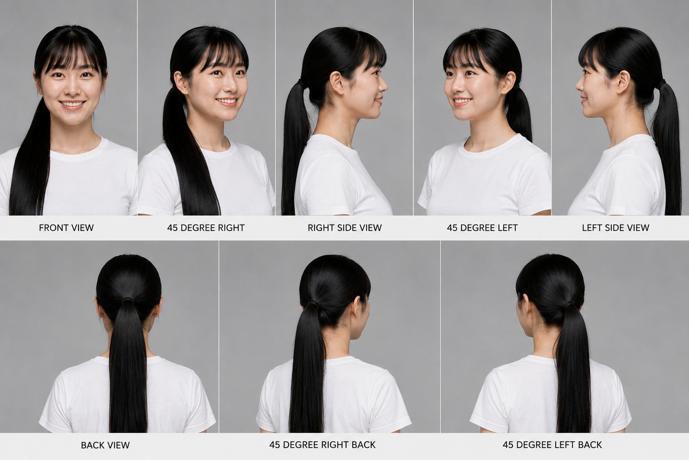
head_shot.png — 8각도 헤드샷
② 전신 멀티샷
📝 프롬프트
A character turnaround sheet of the same Korean woman,
full body, 6 angles in top row (right side, 45° left, front, 45° right, left side, back),
2 angles in bottom row (high-angle view, low-angle view),
plain gray background, white t-shirt and jeans outfit,
photorealistic, consistent style, labeled
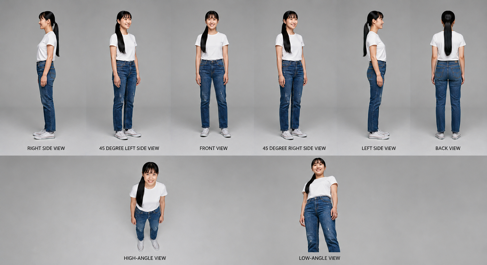
multishot.png — 전신 8각도
③ 표정 시트
📝 프롬프트
A facial expression sheet of the same Korean woman,
5 columns × 2 rows grid, plain gray background,
expressions: neutral, smiling, laughing, angry, surprised (top row),
crying, sleepy, confident, serious, awkward smile (bottom row),
face closeup, labeled, photorealistic
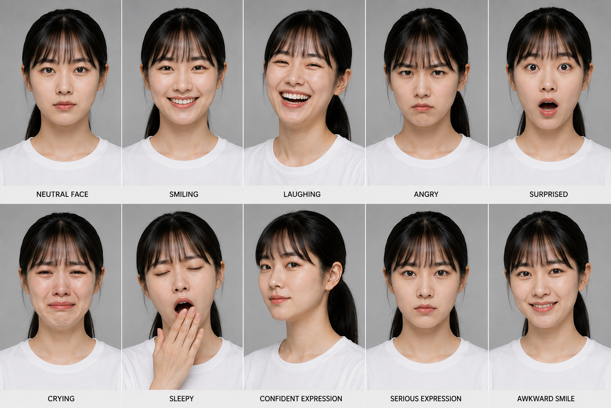
multishot_face.png — 10표정
④ 활동 시트
📝 프롬프트
An activity reference sheet of the same Korean woman,
4 columns × 2 rows grid, outdoor backgrounds,
activities: cycling, running, jump rope, squatting (top row),
jumping, basketball, soccer, cooking (bottom row),
dynamic poses, photorealistic, labeled in Korean
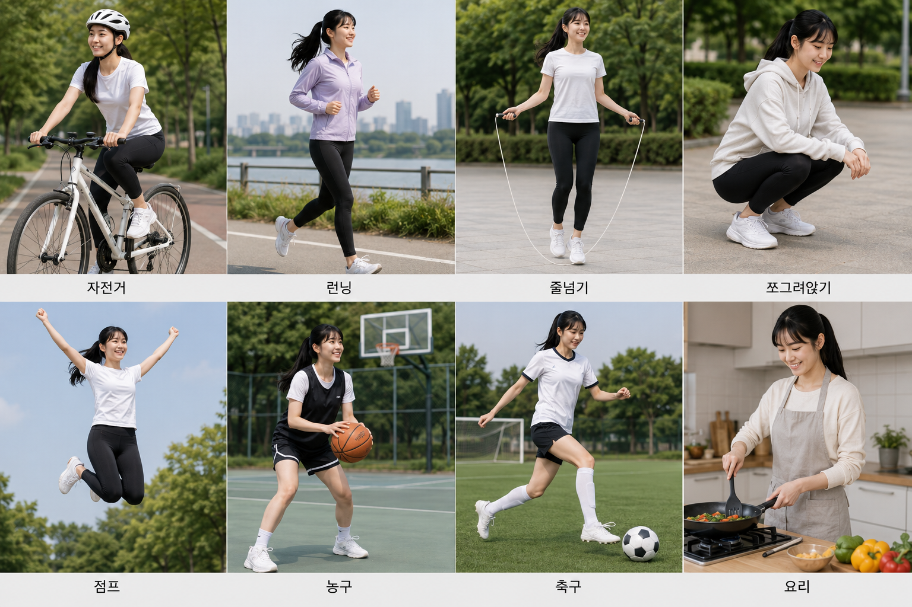
activities.png — 활동 8종
⚠️ 이미지 해상도 기준
데이터 시트로 생성되는 개별 이미지 1장당 가로 최소 1024px 이상이어야 합니다.
그리드 시트를 나눴을 때 각 컷이 1024px 미만이면 Reference Image로 쓸 때 품질이 떨어져 인물 일관성이 낮아집니다.
파이어플라이 생성 해상도를 4:3 이상 (최소 2048×1536)으로 설정하거나, 그리드 열 수를 줄여서 컷당 해상도를 확보하세요.
해상도가 부족한 이미지는 Upscayl(무료 오픈소스)로 업스케일 후 사용하세요. AI 기반으로 화질 손상 없이 2~4배 확대할 수 있습니다.
💡 강의 포인트
- Reference Image Strength는 55~65%가 가장 잘 맞는 구간. 너무 높으면 그리드 포맷이 안 잡히고, 너무 낮으면 인물 얼굴이 달라집니다.
- 한 번에 완벽하게 나오지 않아도 괜찮아요. 가장 비슷한 결과물을 골라서 저장하면 됩니다.
🎙 나레이션
이제 실제로 3가지 장면을 만들어 볼게요. 매 장면마다 왜 이 이미지를 골랐는지 설명하면서 진행하겠습니다.
🎬 컷 1 — 카페 장면 (앉아서 커피 마시기)
🖥 이미지 선택 이유 설명하며 실연
- "웃는 표정이 필요하고, 상반신 구도가 맞으니까 이 두 개를 씁니다"
- Reference Image: 표정/표정_02.png (smiling) → Strength 60%
- Structure Reference: 클로즈업/클로즈업_01.png (상반신 정면) → Strength 35%
📝 프롬프트
Korean woman, early 20s, long black hair with bangs,
sitting at a cozy Seoul cafe, holding a latte,
warm smile, soft afternoon light,
wooden table, bokeh background,
medium shot, photorealistic
🎬 컷 2 — 야외 걷기 장면
🖥 이미지 선택 이유 설명하며 실연
- "걷는 방향이 오른쪽을 향하도록 45도 앵글로 잡겠습니다. 표정도 같은 각도 컷을 써야 자연스러워요"
- Reference Image: 표정_상세/smiling_45R.png → Strength 60%
- Structure Reference: 전신/전신_02.png (45도 전신) → Strength 40%
📝 프롬프트
Korean woman, early 20s, long black hair with bangs,
walking on a bright Seoul street,
casual outfit, light blue cardigan,
natural daylight, gentle breeze,
full body shot, photorealistic
🎬 컷 3 — 감정 클로즈업 (드라마틱한 장면)
🖥 이미지 선택 이유 설명하며 실연
- "이번엔 표정_상세 폴더를 씁니다. 감정 × 각도를 조합해서 고를 수 있는 게 이 폴더의 장점이에요"
- Reference Image: 표정_상세/sad_front.png → Strength 65%
- Structure Reference: 없음 (표정만 살리고 배경·구도는 프롬프트로 제어)
📝 프롬프트
Korean woman, early 20s, long black hair with bangs,
looking out a rainy window, melancholic expression,
soft gray indoor light, bokeh raindrops,
portrait shot, cinematic, photorealistic
💡 강의 포인트
- 컷 1→2→3처럼 Reference Image를 바꾸면서 생성해도 인물이 일관되게 유지됩니다 — 그게 데이터셋의 힘이에요.
- Structure Reference Strength는 35~45%가 적당. 너무 높이면 레퍼런스의 배경·의상까지 따라옵니다.
- 표정이 애매한 장면은 표정_상세/neutral_front.png를 기본값으로 쓰세요. 가장 무난합니다.
🎙 나레이션
레퍼런스와 함께 쓰면 훨씬 강력해지는 프롬프트 전략을 정리해 드릴게요. "인물 앵커 구문"이라고 부르겠습니다.
📝 앵커 구문 템플릿 — 매 장면 이 부분을 그대로 복붙
Korean woman, early 20s,
long straight black hair with bangs, low ponytail,
fair skin, natural makeup,
[장면 묘사 + 배경 + 조명 + 카메라 거리]
💡 5가지 핵심 원칙
- 1. 앵커 구문 고정: 모든 장면 프롬프트 앞에 인물 묘사를 동일하게 붙여 넣는다
- 2. 헤어 디테일 명시: "long black hair with bangs, low ponytail" — 헤어는 인상을 좌우하는 핵심
- 3. 조명 일관성: 연속 장면이면 "natural daylight" 또는 "soft indoor light"을 통일
- 4. 카메라 거리 명시: portrait / medium shot / full body — 매 장면 앵글을 적어주면 구도가 안정됨
- 5. "the same ~ as reference" 명시: 첫 줄에 쓰면 레퍼런스 일치율이 올라감
🎙 나레이션
지금까지 배운 Reference Image 방식은 생성할 때마다 레퍼런스를 업로드해야 하고, 일관성에 한계가 있습니다.
파이어플라이에는 더 강력한 방법이 있어요 — 맞춤형 모델입니다. 우리가 만든 인물 이미지들로 AI를 직접 학습시켜서, 프롬프트만 써도 항상 같은 인물이 나오게 하는 거예요.
Reference Image가 "샘플을 보여주는" 거라면, 맞춤형 모델은 "AI가 그 인물을 기억하는" 겁니다.
💡 Reference Image vs 맞춤형 모델
- Reference Image: 매 생성마다 업로드 필요 / 일관성 60~80% / 무료
- 맞춤형 모델: 한 번 학습 후 계속 사용 / 일관성 85~95% / 크레딧 소모 (학습 500 크레딧)
① 맞춤형 모델 접속
🖥 화면 안내
- firefly.adobe.com 접속 → 왼쪽 사이드바 하단 "맞춤형 모델" 클릭
- 상단 "모델 교육" 탭 선택
- 교육 방법 선택 화면에서 "사진 스타일" 선택 (인물 사진이므로)
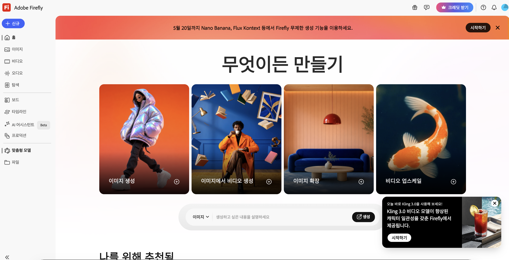
사이드바 하단 "맞춤형 모델" 클릭
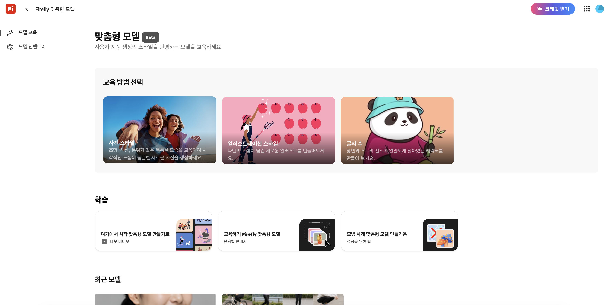
교육 방법 선택 → "사진 스타일" 선택
⚠️ 교육 방법 선택 기준
- 사진 스타일 — 실사 인물, 사진 느낌의 이미지 학습에 사용 ← 우리가 쓸 것
- 일러스트레이션 스타일 — 그림체, 아트 스타일 학습
- 글자 수 — 특정 로고, 폰트, 텍스트 스타일 학습
② 학습 이미지 업로드
🎙 나레이션
여기서 우리가 만들어둔 개별컷 이미지들을 올립니다. 그리드 시트가 아닌 개별 컷 파일을 올려야 해요. 그래야 AI가 각 이미지를 개별 학습 데이터로 처리합니다.
🖥 업로드 이미지 선택 가이드
- 헤드샷 개별컷 8장 — 다양한 각도의 얼굴 학습에 핵심
- 표정 개별컷 10장 — 감정 표현 학습
- 클로즈업 개별컷 8장 — 상반신 각도 학습
- 전신 개별컷 8장 — 전체 체형·의상 학습
- 활동 개별컷 8장 — 다양한 상황·포즈 학습
- 오피스 컷 2장 — 실제 장면 컨텍스트 학습
- 권장 총합: 최소 20장 이상, 많을수록 모델 점수↑ (최대 500장)
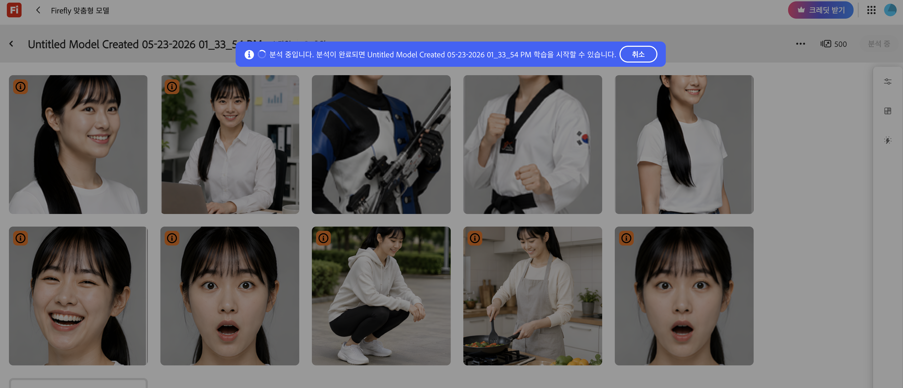
개별컷 업로드 후 분석 중 화면 — 우측 상단 모델 점수 확인
⚠️ 해상도 경고 대응
업로드 시 일부 이미지에 "이미지 해상도 — 최상의 품질을 얻으려면 이미지가 1,024×1,024픽셀 이상이어야 합니다" 경고가 뜰 수 있어요.
해당 이미지는 Upscayl로 4배 업스케일 후 다시 업로드하세요. 경고 이미지가 많을수록 모델 점수가 낮아집니다.
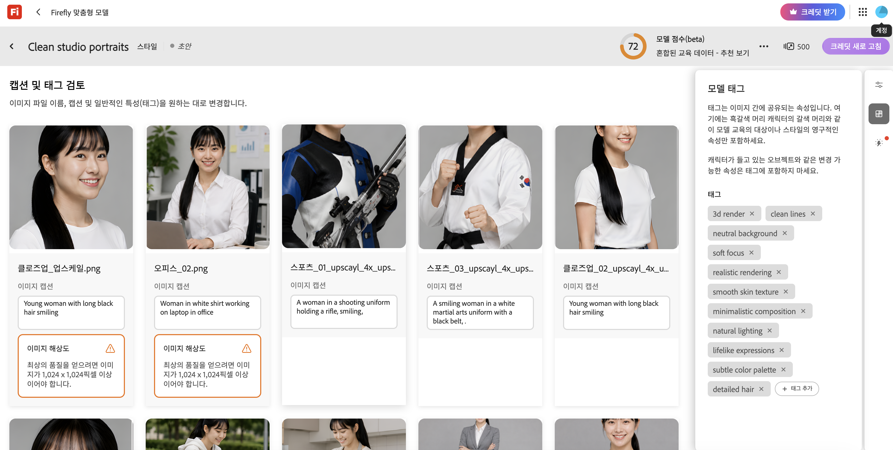
해상도 경고(주황 박스)가 있는 이미지는 Upscayl 업스케일 후 교체
③ 캡션 및 태그 검토
🎙 나레이션
이미지를 올리면 AI가 자동으로 각 이미지의 캡션을 생성하고, 오른쪽 패널에 모델 태그를 제안합니다.
캡션은 각 이미지가 무엇을 담고 있는지 설명하는 텍스트예요. 자동 생성된 캡션이 맞지 않으면 직접 수정할 수 있습니다.
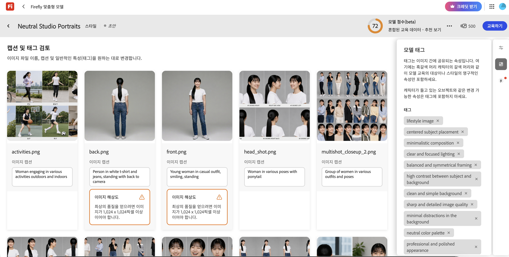
캡션(각 이미지 아래) + 모델 태그(우측 패널) 확인 화면
🖥 캡션 수정 예시
- 자동 생성: "Person in white t-shirt and jeans, standing with back to camera"
- 수정 권장: "Korean woman in her early 20s, long black ponytail, white t-shirt, back view"
- 인종·나이·헤어 등 인물 특징을 캡션에 구체적으로 명시할수록 학습 품질↑
💡 모델 태그 확인 포인트
오른쪽 패널의 태그는 모델의 스타일 특성을 정의합니다. 아래 태그들이 자동 추가되었는지 확인하고, 없으면 직접 추가하세요.
- 필수 확인:
neutral background / natural lighting / realistic rendering
- 추가 권장:
consistent character / Korean woman / long black hair
- 제거 권장: 특정 소품이나 의상 관련 태그 (변경 가능한 속성은 태그에서 빼야 함)
④ 모델 이름 설정 & 교육 시작
🖥 화면 안내
- 상단 모델 이름 입력 (예: "Character_여성_20대_v1")
- 우측 상단 "교육하기" 버튼 클릭
- "분석 중입니다. 분석이 완료되면 학습을 시작할 수 있습니다." 메시지 확인
- 분석 완료 후 학습 시작 → 완료 시 이메일 알림 발송
- 학습 소요 시간: 통상 30분~2시간 (이미지 수에 따라 다름)
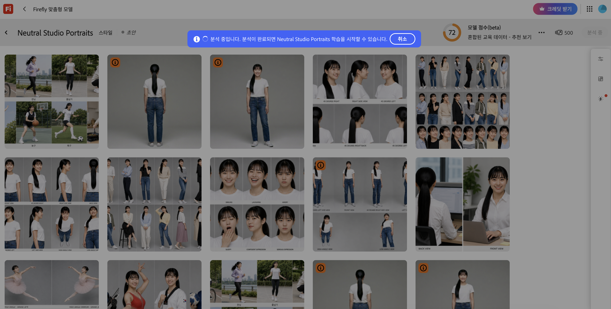
"분석 중입니다" 배너 — 분석 완료 후 교육하기 버튼 활성화
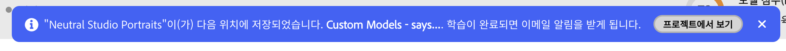
교육 시작 후 저장 완료 알림 — 학습 완료 시 이메일 수신
💡 모델 점수 (beta) 이해하기
학습 완료 후 우측 상단에 모델 점수가 표시됩니다. 점수가 높을수록 일관된 이미지 생성이 가능합니다.
- 90점 이상: 최상 — 대부분의 프롬프트에서 일관된 인물 유지
- 70~90점: 양호 — 일반적 사용에 충분, 이미지 추가 시 개선 가능
- 70점 미만: 보통 — 이미지 수량 부족 or 해상도 문제. 이미지 추가 권장
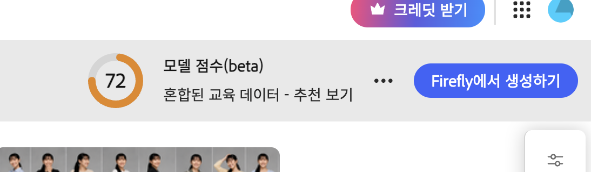
모델 점수 72점 — "Firefly에서 생성하기" 버튼으로 바로 생성 화면 이동
⑤ 맞춤형 모델로 이미지 생성하기 — 2단계 전략
🎙 나레이션
여기서 중요한 포인트가 있습니다. 맞춤형 모델만 단독으로 쓰면 인물이 정확하게 나오지 않을 수 있어요. 학습 데이터가 완벽하지 않거나, 모델 점수가 낮은 경우 특히 그렇습니다.
실전에서 쓰는 2단계 전략을 알려드릴게요.
1단계 — 초안 생성 (맞춤형 모델 단독)
🖥 화면 안내
- 파이어플라이 이미지 생성 → 오른쪽 "일반 설정" → 모델 드롭다운에서 학습한 모델 선택
- "업스케일 및 향상" 토글 ON
- 프롬프트 입력 후 여러 장 생성 (4~8장)
- 결과 중 인물이 가장 잘 맞게 나온 컷 2~4장 선택
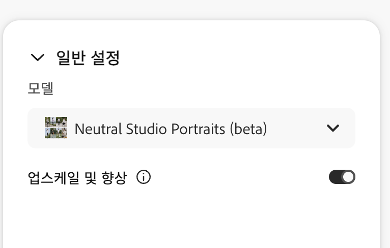
일반 설정 → 모델 드롭다운에서 학습한 모델 선택 + 업스케일 및 향상 ON
📝 1단계 프롬프트 예시
풀 샷, 군중 속 여성 *단일* 인물,
붉은 반팔 셔츠에, 검정 스키니진을 입고 있으며,
오른 뺨에는 태극무늬 페이스페인팅을 하고 있다.
대한민국 서울 길거리 한 복판에 서 있다.
⚠️ 1단계에서 이런 결과가 나왔다면?
맞춤형 모델 단독으로 생성 시 인물 얼굴이 다르거나, 학습한 인물의 특징이 섞이는 경우가 있어요.
이건 정상입니다 — 이 결과 중 가장 비슷하게 나온 컷을 골라서 2단계로 넘어갑니다.
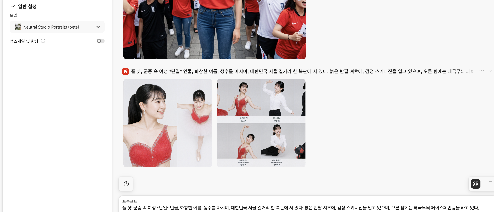
맞춤형 모델 단독 생성 결과 — 인물이 다소 섞이거나 틀릴 수 있음 (정상)
2단계 — 참조 이미지 추가로 정밀 생성
🖥 화면 안내
- 1단계에서 잘 나온 컷 2~4장을 프롬프트 하단 "참조 이미지"에 추가
- 원본 개별컷(헤드샷, 표정 등)도 함께 참조 이미지로 추가 — 총 4~6장
- 맞춤형 모델 + 참조 이미지를 동시에 사용해서 재생성
- 인물 일관성이 크게 향상된 최종 결과 확인
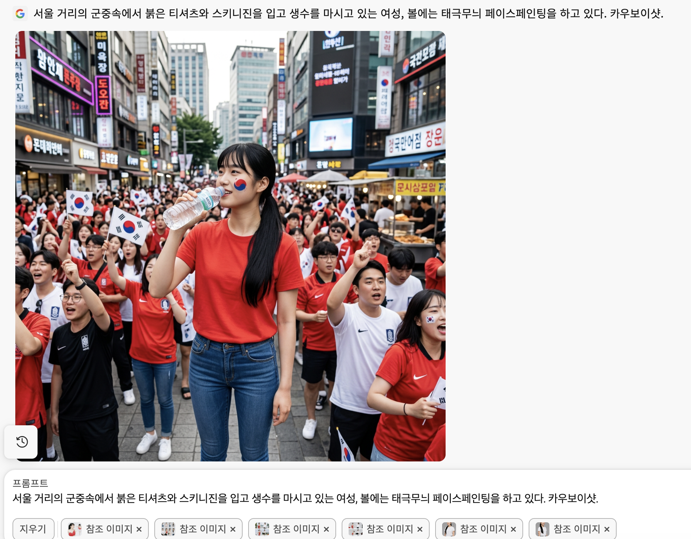
맞춤형 모델 + 참조 이미지 6장 조합 — 동일 인물이 서울 군중 속 장면에 정확히 등장
💡 2단계 참조 이미지 구성 전략
- 1단계 잘 나온 컷 2~3장 + 개별컷 폴더에서 2~3장 조합이 가장 효과적
- 참조 이미지는 최대 6장 — 너무 많으면 오히려 혼선 발생
- 참조 이미지 중 얼굴이 정면으로 나온 컷을 반드시 1장 이상 포함
- 이 방식으로 최종 결과물을 쌓아가면서 → 잘 나온 컷을 계속 참조 이미지로 재활용
💡 맞춤형 모델 추가 활용 팁
- 학습 이미지에 배경이 단색(회색)인 스튜디오 컷이 많을수록 다양한 배경에서 인물이 깔끔하게 분리됩니다
- 이미지를 추가로 업로드해서 모델을 계속 개선할 수 있습니다
- 모델 하나로 다양한 인물을 다 커버하려 하지 마세요 — 인물당 모델 1개가 원칙